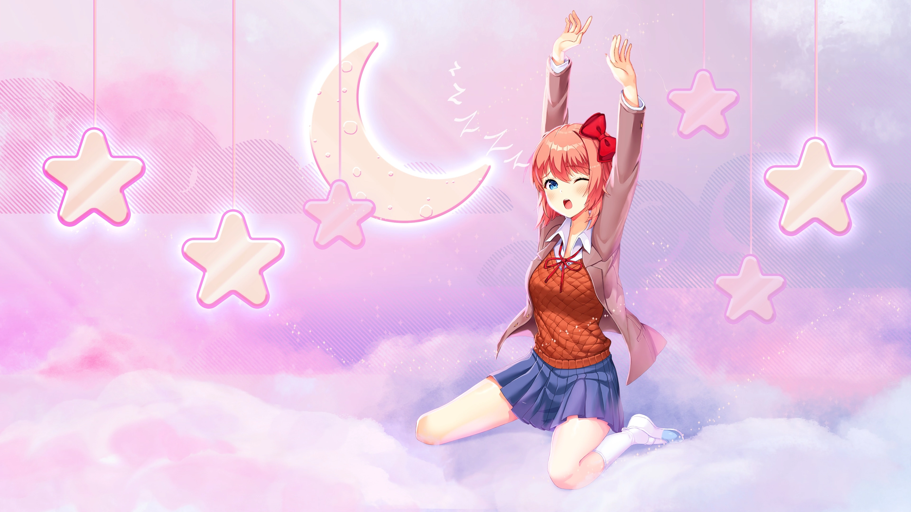
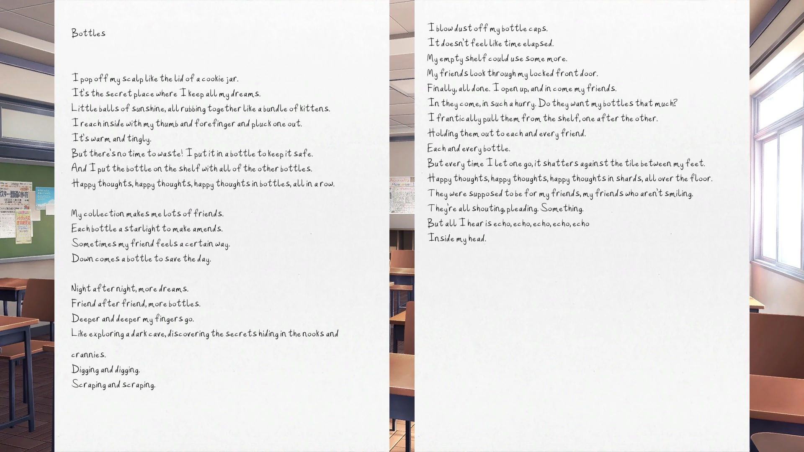
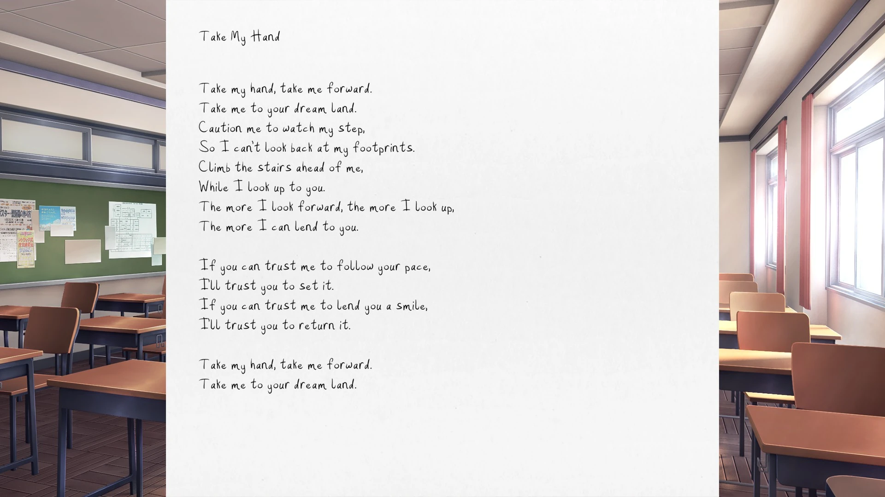
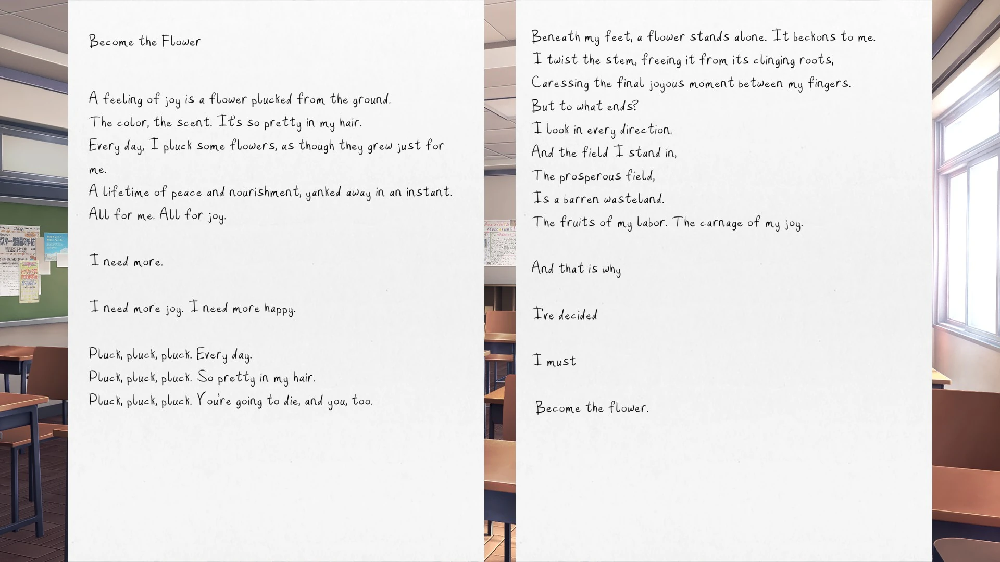
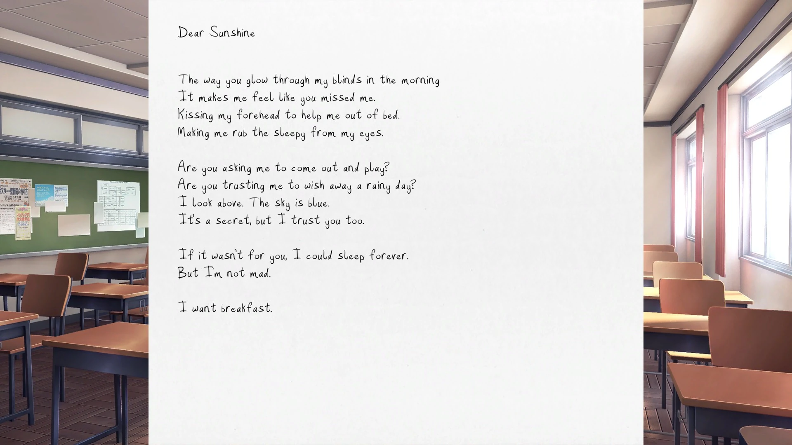
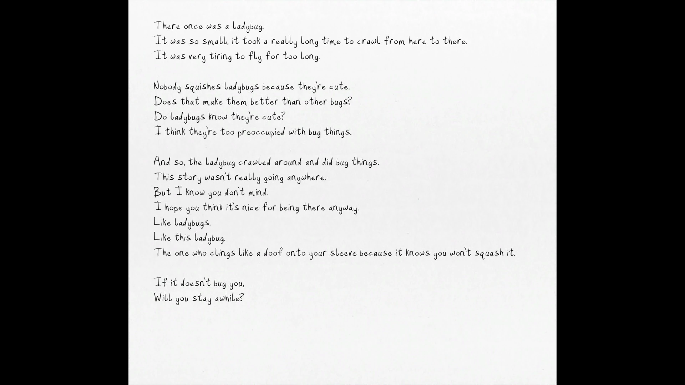
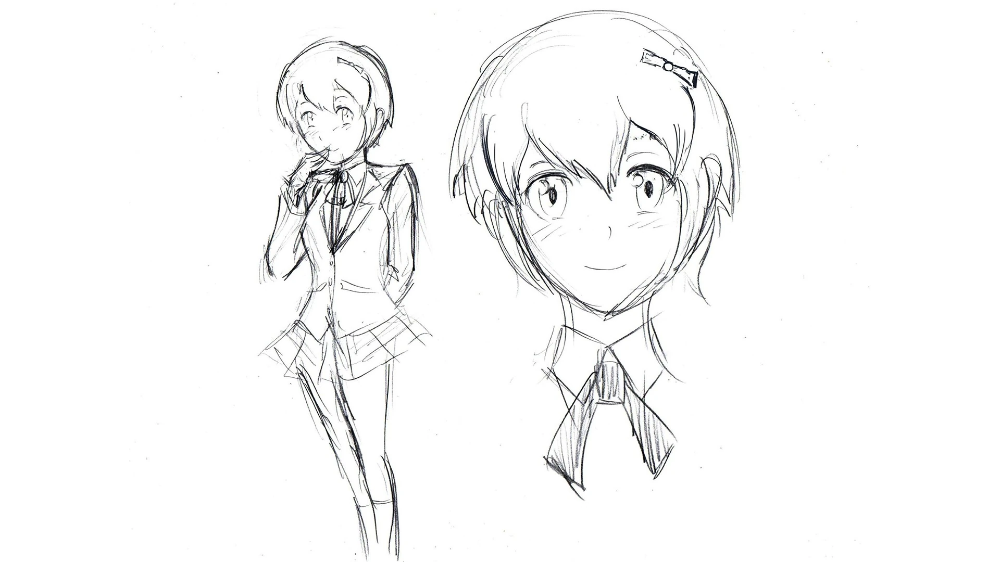
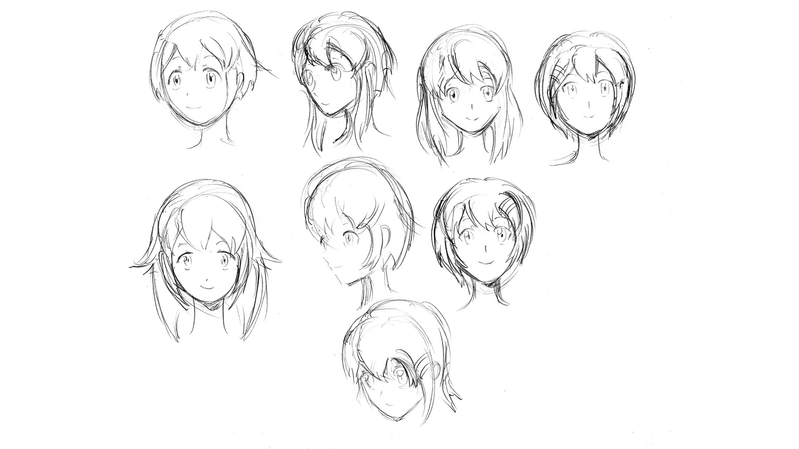
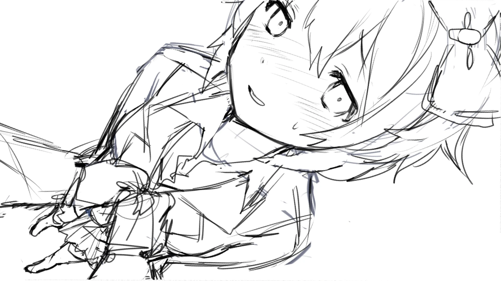
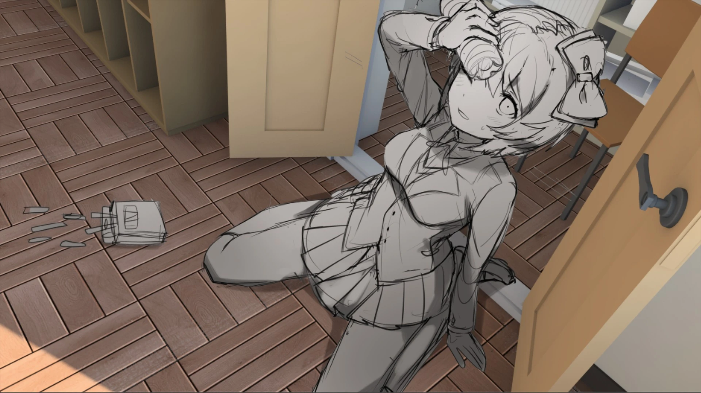

Durant les mini-jeux de poésie, vous devez choisir le plus de mots qui rendent Sayori heureuse. Un seul poème est nécessaire pour obtenir cette illustration.
Durant les mini-jeux de poésie, vous devez choisir le plus de mots
qui rendent Sayori heureuse. Deux poèmes à Sayori sont nécessaires
pour obtenir cette illustration.
Lorsque Sayori vous avoue ses sentiments, vous devez cliquer sur
« Je t'aime ».
Terminez l'histoire secondaire « Confiance 1 ».
Possédé dès le début du jeu. Exclusif aux versions iOS et Android
de Doki Doki Literature Club.
Jouez à DDLC
Jouez à DDLC
Jouez à travers " Trust "
Jouez à travers " Trust "
Procurez-vous tous les autres poèmes de Sayori.
Dans l'acte 1, écrivez un poème pour un personnage différent
à chaque chapitre.
Dans l'acte 1, appelez Sayori à l'aide pendant la dispute
entre Natsuki et Yuri
Dans l'acte 1, dites à Sayori que vous la raccompagneriez
quand même à pied.
Durant le jeu de poésie, écrivez un poème parfait pour Sayori.
Dans l'acte 1, écrivez les trois poèmes pour Sayori.